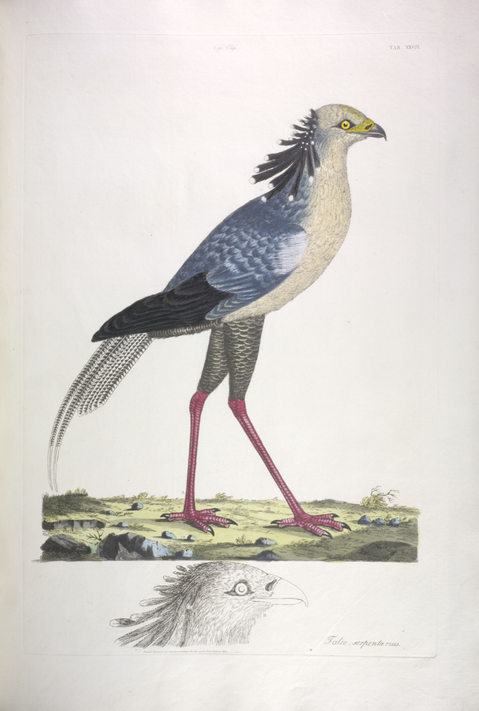
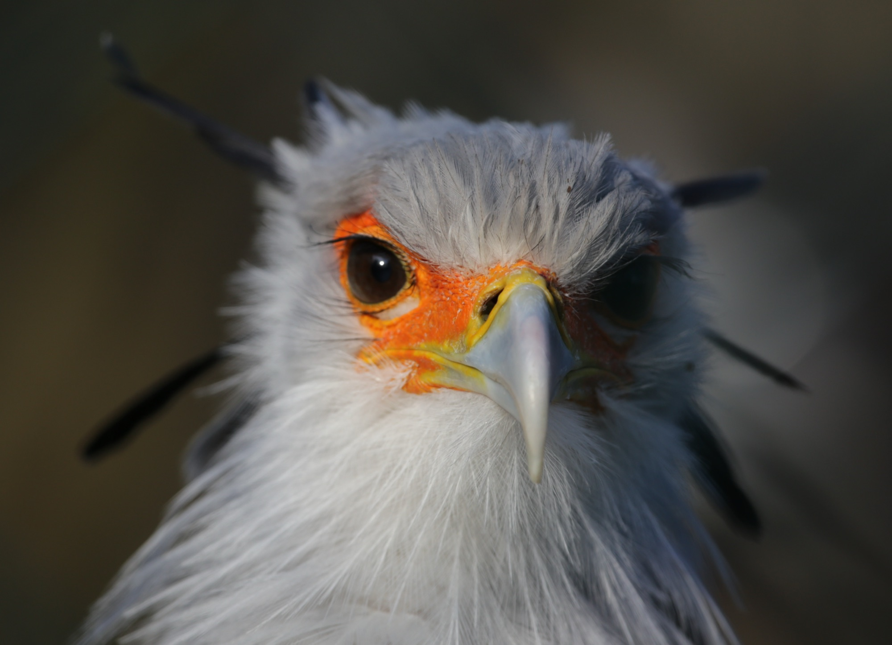
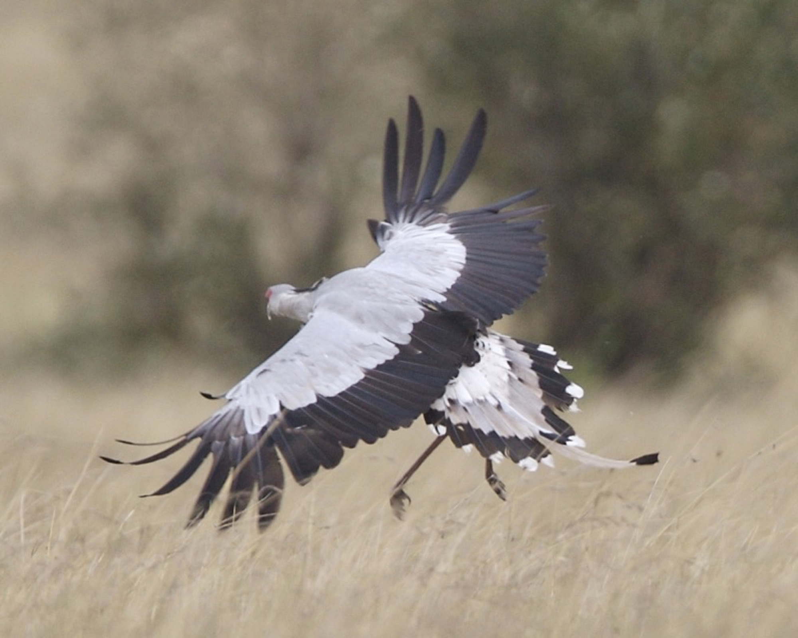
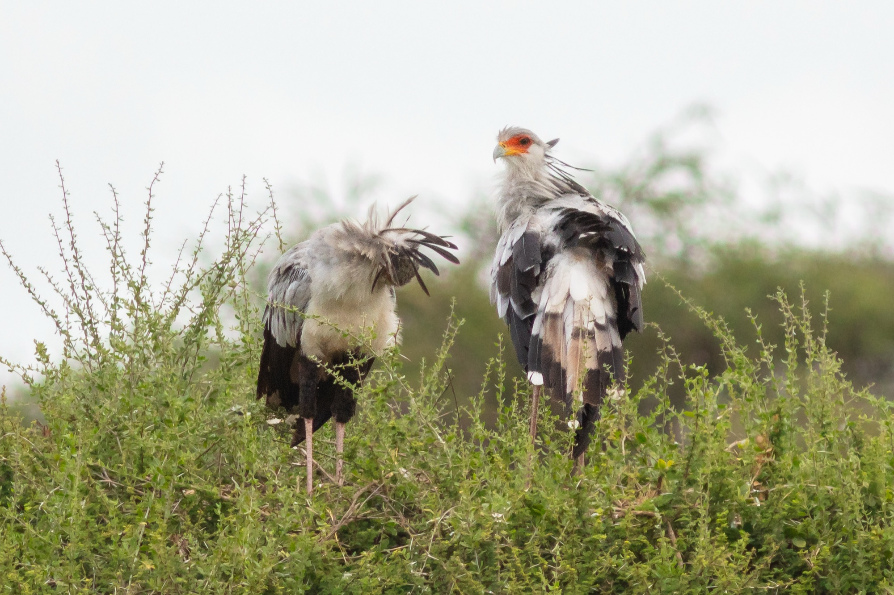

FORM X‑1 —— RECORD OF THE PROSECUTOR 公诉人档案

此案卷宗最早可追溯的画像记录
一名黑袜长腿、
戴假睫毛的
法庭书记员。
它的名字是一场旷日持久的误会：脑后那簇黑色羽冠，酷似旧时法庭书记员夹在耳后的羽毛笔——于是人们管它叫 “Secretary”，秘书鸟。而它的拉丁属名 Sagittarius 毫不含糊：射手。一个用腿办案的射手。
| 身高 HEIGHT | 约 1.3 m | 站着等高一名小学生 |
|---|---|---|
| 翼展 WINGSPAN | 逾 2 m | 起飞时白底黑尖 |
| 体重 WEIGHT | 约 4 kg | 轻得不像谋杀者 |
| 证件照 ID | 面部橙红裸皮 | 情绪激烈时愈发鲜红 |

FORM X‑2 —— EVIDENCE LEDGER 证据清单
检方呈交五份证供。
每一份都可复核。
15ms
一次踢击从抬腿到命中的接触时间 —— 约为眨眼耗时的十分之一
| E‑01 | 踢击峰值力约 195 牛顿，相当于自身体重五倍 | Portugal 等，2016 年生物力学实测 |
|---|---|---|
| E‑02 | 每日徒步巡猎 20–30 公里 | 猛禽中唯一以步行办案者 |
| E‑03 | 猎物清单含眼镜蛇、鼓腹咝蝰等剧毒蛇类 | 兼收野兔、獴、蜥蜴与甲虫 |
| E‑04 | 小腿覆有铠甲状鳞片，可挡蛇类反击 | 自带防刺装备 |
| E‑05 | 击杀后整吞或撕食，现场不留凶器 | 因为凶器就是脚 |
FORM X‑3 —— THE CRIME SCENE 作案现场还原

① ②① 双翼展开并非为飞——只为保持平衡，像拳手出拳前的架式。
② 真正的武器在画面之外：那条下探的长腿。它不用喙啄，抬腿，瞄准头部或脊柱，stomp。
一条鼓腹咝蝰从被锁定到毙命，平均不足一秒。幼年的蹬羚、獴，亦在作案范围内。这是非洲草原上唯一在地面办案的猛禽。
FORM X‑4 —— JURISDICTION 管辖区域
整个撒哈拉以南，
都是它的法庭。
从塞内加尔的开阔草原，到埃塞俄比亚高原，再一路南下至好望角——只要有空旷的草原与金合欢，就有它的辖区。终身一夫一妻，在平顶金合欢树顶筑起一米见方的巢，并用翅膀在空中翻滚，宣示主权。
| 辖区 RANGE | 撒哈拉以南非洲 | 约 2,000 万 km² |
|---|---|---|
| 据点 NEST | 金合欢树顶 | 夫妻每年修缮同一处 |
| 编制 PAIR | 终身一夫一妻 | 联合办案，共同哺幼 |

公诉人夫妇在事务所楼顶巡视 · 肯尼亚安博塞利
然而本席必须宣读另一份卷宗——
公诉人
需要辩护人。
2020 年，IUCN 红色名录将蛇鹫由「易危」上调为濒危。草原开垦、电线碰撞、非法捕捉，正在让这位全非洲唯一的地面猛禽，失去它审理了三千万年的法庭。案件尚未审结；这一次，它站在了需要被辩护的一侧。
本案援引：IUCN Red List 2020 · Portugal et al., Current Biology 26(2), 2016